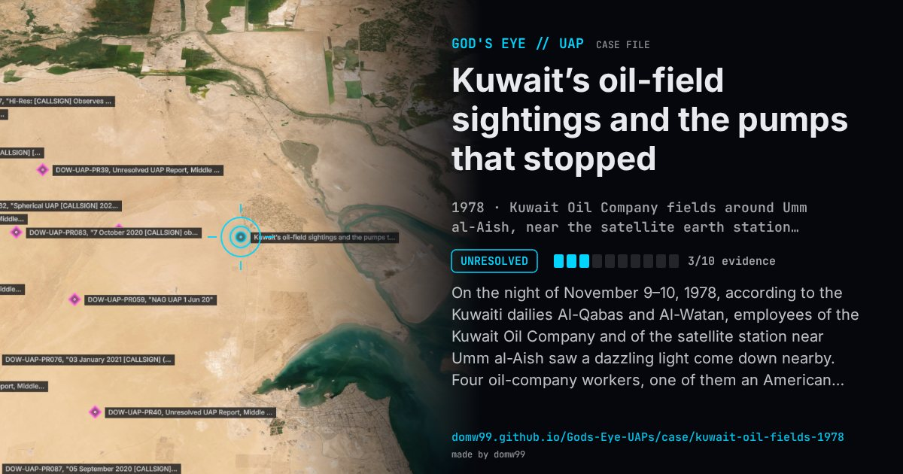

Kuwait’s oil-field sightings and the pumps that stopped

On the night of November 9–10, 1978, according to the Kuwaiti dailies Al-Qabas and Al-Watan, employees of the Kuwait Oil Company and of the satellite station near Umm al-Aish saw a dazzling light come down nearby. Four oil-company workers, one of them an American, went to within about 250 metres and saw a disc as big as a jumbo jet, with a cupola and a red light on top, which stayed on the ground for about seven minutes while telephone and radio links in the area were cut, then rose vertically at great speed. Sightings over the oil fields went on until December 14. The U.S. embassy’s cable to Washington in January 1979, “UFO sightings cause security concern in Kuwait”, reported that the government had set up a committee of experts from the Kuwait Institute for Scientific Research, and that a senior Kuwait Oil Company official said the oil-pumping equipment had shut down automatically during one sighting and started again by itself when the object left, although it could normally be restarted only by hand.
Explanation
The government’s committee of experts from the Kuwait Institute for Scientific Research ruled out spy aircraft but gave no explanation, and its report was never published. The U.S. embassy reported the stop and restart of the pumping equipment as a Kuwait Oil Company official described it; nothing else about the landing is documented beyond press accounts.
What was seen
Shape: A dazzling light; close up, a domed disc the size of a jumbo jet with a red light on top
Witnesses: Staff of a Kuwait Oil Company pumping station, including an American, and of the nearby satellite station
Duration: About seven minutes on the ground; the series of sightings ran for five weeks
Sources
- U.S. embassy Kuwait, “UFO sightings cause security concern in Kuwait”, January 1979 (FOIA copy)
- Le Méridional, November 13, 1978 (translated press archive)
Browse
- 1970s
- Unresolved
- Close encounters
- Official government documents
- Many independent witnesses
- Reported electromagnetic effects
- Lights and fireballs
- Discs and saucers